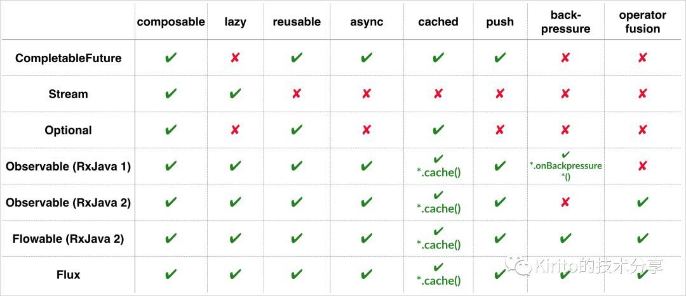

Reactive #
- ReactiveX An API for asynchronous programming with observable streams
- 响应式流（Reactive Stream） 具备“异步非阻塞”特性和“流量控制”能力的数据流.
- RSocket 是一个支持 reactive-stream 语义的开源网络通信协议，它将 reactive 语义的复杂逻辑封装了起来，使得上层可以方便实现网络程序。
Java8、RxJava、Reactor比较[11] #

- 核心特性 async，back-pressure(Stream)
全异步化 #
- 全异步化(基于消息和事件)【7,8】
- 框架 Akka （Actor+mailbox）
- 库 RxJava (Observable+event)
- 协议 RSocket